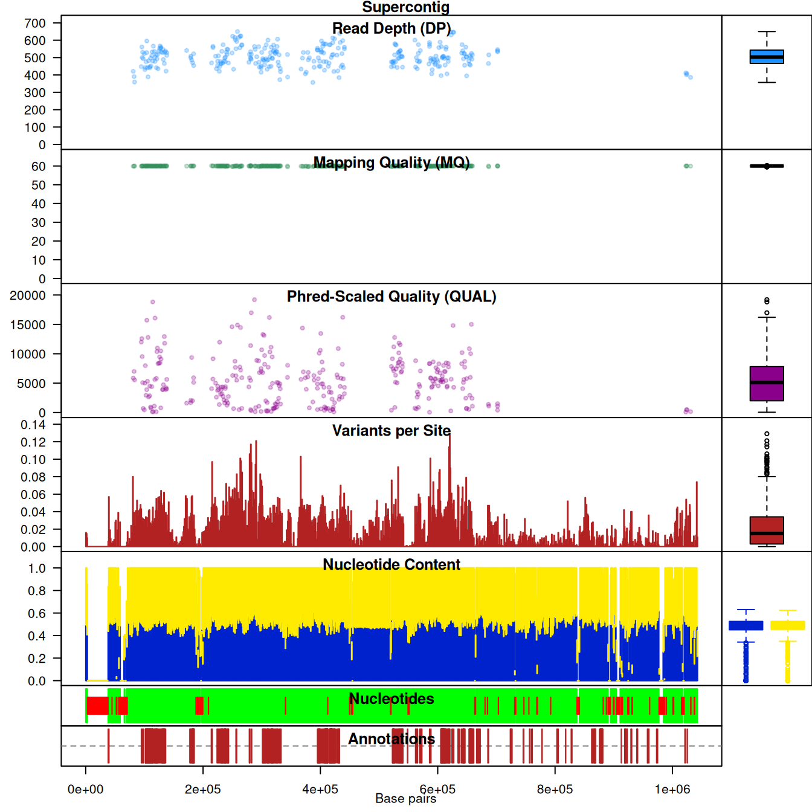

vcfR documentation
byBrian J. Knaus and Niklaus J. Grünwald
Ranking data
In the vignette ‘Filtering data’ we used thresholds as an attempt to isolate the high quality fraction of variants from a VCF file. Here we assign ranks to variants within windows. This information used alone, or in conjunction with thresholds, may be an effective strategy to identify high quality variants.
Data
As in other vignettes, we begin by loading the example data.
library(vcfR)
vcf_file <- system.file("extdata", "pinf_sc50.vcf.gz", package = "pinfsc50")
dna_file <- system.file("extdata", "pinf_sc50.fasta", package = "pinfsc50")
gff_file <- system.file("extdata", "pinf_sc50.gff", package = "pinfsc50")
vcf <- read.vcfR(vcf_file, verbose = FALSE)
dna <- ape::read.dna(dna_file, format = "fasta")
gff <- read.table(gff_file, sep="\t", quote = "")
chrom <- create.chromR(name="Supercontig", vcf=vcf, seq=dna, ann=gff, verbose=FALSE)
#chrom <- masker(chrom, min_DP = 900, max_DP = 1500)
chrom <- proc.chromR(chrom, verbose = TRUE)## Nucleotide regions complete.## elapsed time: 0.29## N regions complete.## elapsed time: 0.276## Population summary complete.## elapsed time: 0.256## window_init complete.## elapsed time: 0## windowize_fasta complete.## elapsed time: 0.099## windowize_annotations complete.## elapsed time: 0.013## windowize_variants complete.## elapsed time: 0.001Creating scores to rank
Before we can rank our variants, we need to come up with some sort of criteria to help us determine if a variant is high or low quality. Once we have this score we can select the variant with the highest score from each window. In order to create our vector of scores, let’s remind ourselves of what data we have.
head(chrom)## ***** Class chromR, method head *****
## Name: Supercontig
## Length: 1,042,442
##
## ***** Sample names (chromR) *****
## [1] "BL2009P4_us23" "DDR7602" "IN2009T1_us22" "LBUS5"
## [5] "NL07434" "P10127"
## [1] "..."
## [1] "P17777us22" "P6096" "P7722" "RS2009P1_us8" "blue13"
## [6] "t30-4"
##
## ***** VCF fixed data (chromR) *****
## CHROM POS ID REF ALT QUAL FILTER
## [1,] "Supercontig_1.50" "41" NA "AT" "A" "4784.43" NA
## [2,] "Supercontig_1.50" "136" NA "A" "C" "550.27" NA
## [3,] "Supercontig_1.50" "254" NA "T" "G" "774.44" NA
## [4,] "Supercontig_1.50" "275" NA "A" "G" "714.53" NA
## [5,] "Supercontig_1.50" "386" NA "T" "G" "876.55" NA
## [6,] "Supercontig_1.50" "462" NA "T" "G" "1301.07" NA
## [1] "..."
## CHROM POS ID REF ALT QUAL FILTER
## [22026,] "Supercontig_1.50" "1042176" NA "T" "A" "162.59" NA
## [22027,] "Supercontig_1.50" "1042196" NA "G" "A" "180.86" NA
## [22028,] "Supercontig_1.50" "1042198" NA "T" "G" "60.27" NA
## [22029,] "Supercontig_1.50" "1042303" NA "C" "G" "804.15" NA
## [22030,] "Supercontig_1.50" "1042396" NA "GA" "G" "1578.82" NA
## [22031,] "Supercontig_1.50" "1042398" NA "A" "C" "1587.87" NA
##
## INFO column has been suppressed, first INFO record:
## [1] "AC=32" "AF=1.00"
## [3] "AN=32" "DP=174"
## [5] "FS=0.000" "InbreedingCoeff=-0.0224"
## [7] "MLEAC=32" "MLEAF=1.00"
## [9] "MQ=51.30" "MQ0=0"
## [11] "QD=27.50" "SOR=4.103"
##
## ***** VCF genotype data (chromR) *****
## ***** First 6 columns *********
## FORMAT BL2009P4_us23 DDR7602
## [1,] "GT:AD:DP:GQ:PL" "1|1:0,7:7:21:283,21,0" "1|1:0,6:6:18:243,18,0"
## [2,] "GT:AD:DP:GQ:PL" "0|0:12,0:12:36:0,36,427" "0|0:20,0:20:60:0,60,819"
## [3,] "GT:AD:DP:GQ:PL" "0|0:27,0:27:81:0,81,1117" "0|0:26,0:26:78:0,78,1077"
## [4,] "GT:AD:DP:GQ:PL" "0|0:29,0:29:87:0,87,1243" "0|0:27,0:27:81:0,81,1158"
## [5,] "GT:AD:DP:GQ:PL" "0|0:26,0:26:78:0,78,1034" "0|0:30,0:30:90:0,90,1242"
## [6,] "GT:AD:DP:GQ:PL" "0|0:23,0:23:69:0,69,958" "0|0:36,0:36:99:0,108,1556"
## IN2009T1_us22 LBUS5
## [1,] "1|1:0,8:8:24:324,24,0" "1|1:0,6:6:18:243,18,0"
## [2,] "0|0:16,0:16:48:0,48,650" "0|0:20,0:20:60:0,60,819"
## [3,] "0|0:23,0:23:69:0,69,946" "0|0:26,0:26:78:0,78,1077"
## [4,] "0|0:32,0:32:96:0,96,1299" "0|0:27,0:27:81:0,81,1158"
## [5,] "0|0:41,0:41:99:0,122,1613" "0|0:30,0:30:90:0,90,1242"
## [6,] "0|0:35,0:35:99:0,105,1467" "0|0:36,0:36:99:0,108,1556"
## NL07434
## [1,] "1|1:0,12:12:36:486,36,0"
## [2,] "0|0:28,0:28:84:0,84,948"
## [3,] "0|1:19,20:39:99:565,0,559"
## [4,] "0|1:19,19:38:99:523,0,535"
## [5,] "0|1:22,22:44:99:593,0,651"
## [6,] "0|1:29,25:54:99:723,0,876"
##
## ***** Var info (chromR) *****
## ***** First 6 columns *****
## CHROM POS MQ DP mask n
## 1 Supercontig_1.50 41 51.30 174 TRUE 16
## 2 Supercontig_1.50 136 52.83 390 TRUE 17
## 3 Supercontig_1.50 254 56.79 514 TRUE 17
## 4 Supercontig_1.50 275 57.07 514 TRUE 17
## 5 Supercontig_1.50 386 57.40 509 TRUE 16
## 6 Supercontig_1.50 462 58.89 508 TRUE 17
##
## ***** VCF mask (chromR) *****
## Percent unmasked: 100
##
## ***** End head (chromR) *****Let’s use the genotype quality (GQ) and sequence depth (DP) from the VCF genotype information. We can isolate matrices of genotype quality and sequence depth with the extract.gt function.
gq <- extract.gt(chrom, element="GQ", as.numeric=TRUE)
dp <- extract.gt(chrom, element="DP", as.numeric=TRUE)We can visualize these data with box and whisker plots.
#hist(gq[,1])
par( mar = c(8,4,4,2) )
boxplot(gq, las=2, col=2:5, main="Genotype Quality (GQ)")
dp2 <- dp
dp2[ dp2 == 0 ] <- NA
boxplot(dp2, las=2, col=2:5, main="Sequence Depth (DP)", log="y")
abline(h=10^c(0:4), lty=3, col="#808080")
par( mar = c(5,4,4,2) )The values for genotype quality appear to range from 0 to 100 with among sample variability. For example, sample P13626 consists of variants which are predominantly near 100 while sample P1362 consists of variants with qualities mostly just below 20. Comparison of the plots suggests that there is a correlation among sequence depth (DP) and genotype qualities (GQ) where samples with variants of high sequence depth have variants of high genotype quality.
Unlike genotype quality, we don’t necessarily want to maximize on sequence depth. Low depth variants may make obvious poor choices, but excessive coverage may represent variants from repetitive regions of the genome. What we really want to optimize on is mean depth, or some other measure of central tendency. This will require a little mathematical gymnastics. If we substract from each library its mean (or other measure of central tendency) it will center the data around zero. We can then take an absolute value which will cause the data to range from zero to some infinite number with zero being our optimal value (the measure of central tendency). The algorithm we’re going to use looks for an optimum and not a minimum, so if we multiply by negative one our data will range from negative infinity to zero with zero being optimal. We now have a measure of depth where the greatest value is the optimal value.
mids <- apply(dp, MARGIN=2, median, na.rm=TRUE)
dp2 <- sweep(dp, MARGIN=2, mids, FUN="-")
dp2 <- abs(dp2)
dp2 <- -1 * dp2par( mar = c(8,4,4,2) )
boxplot(dp2, las=2, col=2:5, main="Sequence Depth (DP)")par( mar = c(5,4,4,2) )Before we combine these data we have one more issue we need to address. In their current state, sequence depth’s range is much greater than genotype quality. This means that the data are effectively weighted, if we simply add them together the sequence depth will have a greater impact on the final metric than will genotype quality. If we are happy with that then we can proceed. If we would like to equalize each metric’s contribution to our final measure of quality we’ll want to normalize the data. The genotype quality data is fairly straight forward. If we divide each library by 100 (their theoretical maximum) they will scale from 0 to 1 instead of 0 to 100. For the sequence depth we can add the absolute value of the minimum value to each library, this will make all of the data positive. Then we can divide by this value and our data should then scale from 0 to 1.
gq2 <- gq/100
range(gq2, na.rm=TRUE)## [1] 0.00 0.99amins <- abs(apply(dp2, MARGIN=2, min, na.rm = TRUE))
dp2 <- sweep(dp2, MARGIN=2, STATS = amins, FUN="+")
dp2 <- sweep(dp2, MARGIN=2, STATS = amins, FUN="/")
range(dp2, na.rm=TRUE)## [1] 0 1We now have metrics which are fairly equal. We can add them together and summarize over variants.
scores <- dp2 + gq2
scores <- rowSums(scores, na.rm = TRUE)Check their distribution with a histogram.
hist(scores, col=4)
Once we have scores in hand we can use them to rank our variants.
chrom <- rank.variants.chromR(chrom, scores)
head(chrom@var.info)## CHROM POS MQ DP mask n Allele_counts He Ne
## 1 Supercontig_1.50 41 51.30 174 TRUE 16 0,32 0.0000000 1.000000
## 2 Supercontig_1.50 136 52.83 390 TRUE 17 32,2 0.1107266 1.124514
## 3 Supercontig_1.50 254 56.79 514 TRUE 17 31,3 0.1608997 1.191753
## 4 Supercontig_1.50 275 57.07 514 TRUE 17 31,3 0.1608997 1.191753
## 5 Supercontig_1.50 386 57.40 509 TRUE 16 29,3 0.1699219 1.204706
## 6 Supercontig_1.50 462 58.89 508 TRUE 17 31,3 0.1608997 1.191753
## window_number rank
## 1 0 16
## 2 0 13
## 3 0 9
## 4 0 10
## 5 0 14
## 6 0 2This creates a vector of window numbers and rank within each window and adds them to the var.info slot of the chromR object. We can take a look at them bay calling this directly.
head(chrom@var.info[,c('POS', 'MQ', 'DP', 'window_number', 'rank')])## POS MQ DP window_number rank
## 1 41 51.30 174 0 16
## 2 136 52.83 390 0 13
## 3 254 56.79 514 0 9
## 4 275 57.07 514 0 10
## 5 386 57.40 509 0 14
## 6 462 58.89 508 0 2We can use this information to create our mask.
chrom@var.info$mask[chrom@var.info$rank > 1] <- FALSEAnd plot.
chromoqc(chrom, dp.alpha='66')
This looks pretty good. But we still have variants with rather high or low depth. We can combine the use of masker, which we explored in the vignette ‘Filtering data’ with our ranks. We’ll first call masker, which will reset our mask, and then censor this mask based on rank.
chrom <- masker( chrom, min_QUAL=0, min_DP=350, max_DP=650, min_MQ=59.5, max_MQ=60.5 )
chrom@var.info$mask[ chrom@var.info$rank > 1 ] <- FALSEThen replot.
chromoqc(chrom, dp.alpha='66')
Conclusion
This provides another tool to help filter variant files to the highest quality fraction. In a previous vignette we used the function masker() to filter the data. Here we’ve created a composite score which we’d like to maximize and ranked the variants based on theis score within windows. A strength of this method is that by using windows we’re able to evenly space our variants accross a chromosome. Choosing the best, or several best, variants per window does not necessarily guaranty high quality variants. If all of the variants in a window are of low quality then the best of these may still be poor quality. Some some additional processing may be necessary. With these tools it is hoped that an individual can rapidly explore their data and determine a method to extract the highest quality variants so that downstream analyses will be of the highest quality possible.
Copyright © 2017, 2018 Brian J. Knaus. All rights reserved.
USDA Agricultural Research Service, Horticultural Crops Research Lab.